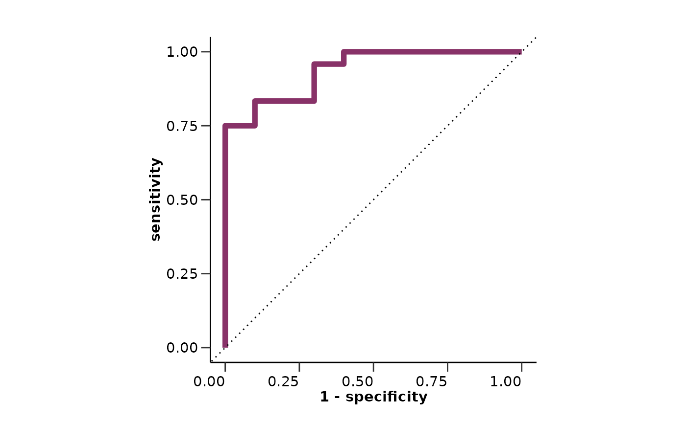
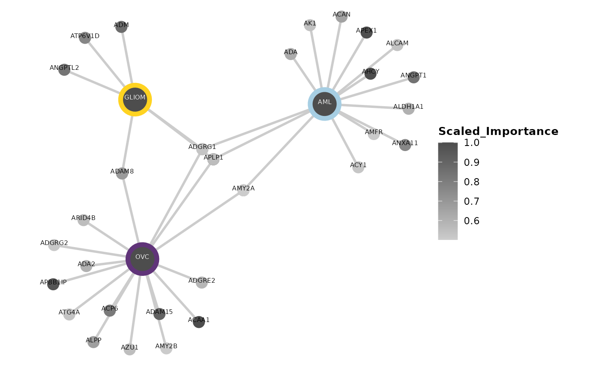

This vignette will guide you through the differential expression analysis of your data. We will load HDAnalyzeR and dplyr, load the example data and metadata that come with the package and initialize the HDAnalyzeR object.
library(HDAnalyzeR)
library(dplyr)
hd_obj <- hd_initialize(dat = example_data,
metadata = example_metadata,
is_wide = FALSE,
sample_id = "DAid",
var_name = "Assay",
value_name = "NPX")First, we will create the data split object using the
hd_split_data() function. This function will create a list
of data frames with the training and testing sets. We can change the
ratio of the training and testing sets, the seed for reproducibility,
and the variable to classify. We can also add metadata columns as
predictors in this stage. In this example, we will use the
Disease column as the variable to classify and the
Sex and Age columns as a metadata
predictor.
split_obj <- hd_split_data(hd_obj,
variable = "Disease",
ratio = 0.8,
seed = 123,
metadata_cols = c("Sex", "Age"))let’s start with a regularized regression LASSO model via
hd_model_rreg(). Exactly like in the previous vignette with
the differential expression functions, we have to state the case and
control(s) groups. To do specifically LASSO we will set the
mixture parameter to 1. We will also set the
verbose parameter to FALSE to not print the
progress of the model in shake of clarity for this vignette.
model_res <- hd_model_rreg(split_obj,
case = "AML",
control = c("CLL", "MYEL", "GLIOM"),
grid_size = 5,
mixture = 1,
verbose = FALSE)
model_res$final_workflow
#> ══ Workflow ════════════════════════════════════════════════════════════════════
#> Preprocessor: Recipe
#> Model: logistic_reg()
#>
#> ── Preprocessor ────────────────────────────────────────────────────────────────
#> 5 Recipe Steps
#>
#> • step_dummy()
#> • step_nzv()
#> • step_normalize()
#> • step_corr()
#> • step_impute_knn()
#>
#> ── Model ───────────────────────────────────────────────────────────────────────
#> Logistic Regression Model Specification (classification)
#>
#> Main Arguments:
#> penalty = 1.26891735029786e-10
#> mixture = mixture
#>
#> Computational engine: glmnet
model_res$metrics
#> $accuracy
#> [1] 0.7352941
#>
#> $sensitivity
#> [1] 1
#>
#> $specificity
#> [1] 0.625
#>
#> $auc
#> [1] 0.9375
#>
#> $confusion_matrix
#> Truth
#> Prediction 0 1
#> 0 15 0
#> 1 9 10
model_res$roc_curve
model_res$probability_plot
model_res$var_imp_plot
We can change several parameters in the hd_model_rreg()
function. For example, we can change the number of cross-validation
folds, the number of grid points for the hyperparameter optimization, or
the feature correlation threshold. Also, exactly as with the DE
functions, if the control parameter is not set, the
function will use all the other classes as controls. For more
information, please refer to hd_model_rreg()
documentation.
We will also set mixture to NULL to allow the model to optimize this parameter (elastic net regression instead of LASSO regression) and set a palette for our classes.
model_res <- hd_model_rreg(split_obj,
case = "AML",
cv_sets = 3,
grid_size = 5,
cor_threshold = 0.7,
palette = "cancers12",
verbose = FALSE)
model_res$final_workflow
#> ══ Workflow ════════════════════════════════════════════════════════════════════
#> Preprocessor: Recipe
#> Model: logistic_reg()
#>
#> ── Preprocessor ────────────────────────────────────────────────────────────────
#> 5 Recipe Steps
#>
#> • step_dummy()
#> • step_nzv()
#> • step_normalize()
#> • step_corr()
#> • step_impute_knn()
#>
#> ── Model ───────────────────────────────────────────────────────────────────────
#> Logistic Regression Model Specification (classification)
#>
#> Main Arguments:
#> penalty = 0.00355590672132398
#> mixture = 0.0638105825171806
#>
#> Computational engine: glmnet
model_res$roc_curve
model_res$probability_plot
model_res$var_imp_plotWe can use a different variable to classify like Sex and
even a different algorithm like random forest via
hd_model_rf(). However, do not forget that we should create
a new split object for this new model. In this case, because the classes
are already balanced, we will not use the balance_groups
parameter to FALSE to consider all the samples in the training dataset.
Let’s also remove everything except from number of features and AUC from
the variable importance plot title.
split_obj <- hd_split_data(hd_obj, variable = "Sex", ratio = 0.8)
model_res <- hd_model_rf(split_obj,
variable = "Sex",
case = "F",
palette = "sex",
cv_sets = 3,
grid_size = 5,
balance_groups = FALSE,
plot_title = c("features", "auc"),
verbose = FALSE)
model_res$final_workflow
#> ══ Workflow ════════════════════════════════════════════════════════════════════
#> Preprocessor: Recipe
#> Model: rand_forest()
#>
#> ── Preprocessor ────────────────────────────────────────────────────────────────
#> 5 Recipe Steps
#>
#> • step_dummy()
#> • step_nzv()
#> • step_normalize()
#> • step_corr()
#> • step_impute_knn()
#>
#> ── Model ───────────────────────────────────────────────────────────────────────
#> Random Forest Model Specification (classification)
#>
#> Main Arguments:
#> mtry = 11
#> trees = 1000
#> min_n = 2
#>
#> Engine-Specific Arguments:
#> importance = permutation
#>
#> Computational engine: ranger
model_res$roc_curve
model_res$probability_plot
model_res$var_imp_plotIf our data have a single predictor, we can use
hd_model_lr() instead of hd_model_rreg() to
perform a logistic regression. Random forest can be used as it was for
multiple predictors.
hd_obj_single <- hd_initialize(dat = example_data |> filter(Assay == "ADA"),
metadata = example_metadata,
is_wide = FALSE,
sample_id = "DAid",
var_name = "Assay",
value_name = "NPX")
split_obj <- hd_split_data(hd_obj_single, variable = "Disease", ratio = 0.8)
model_res <- hd_model_lr(split_obj, case = "AML", palette = "cancers12", verbose = FALSE)
model_res$roc_curve
model_res$probability_plotAt this point we should also check how our selected protein features
look in boxplots. We will run a model as before, extract the features,
select the top-9 of them based on their importance in the model and plot
them with hd_plot_feature_boxplot(). We can either plot
case vs control or case vs all other classes by changing the
type argument.
📓 In case you have metadata variables as features, you will have to remove them from the feature vector before using the
hd_plot_feature_boxplot()function as it is made to visualize protein features.
hd_obj <- hd_initialize(dat = example_data,
metadata = example_metadata,
is_wide = FALSE,
sample_id = "DAid",
var_name = "Assay",
value_name = "NPX")
split_obj <- hd_split_data(hd_obj, variable = "Disease", ratio = 0.8)
model_res <- hd_model_rreg(split_obj, case = "AML", cv_sets = 3, grid_size = 5, verbose = FALSE)
features <- model_res$features |> arrange(desc(Scaled_Importance)) |> head(9) |> pull(Feature)
hd_plot_feature_boxplot(hd_obj,
features = features,
case = "AML",
palette = "cancers12",
type = "case_vs_control")
hd_plot_feature_boxplot(hd_obj,
features = features,
case = "AML",
palette = "cancers12",
type = "case_vs_all")
We can also do multiclassification predictions with all available
classes in the data. The only thing that we should change is set the
case argument to NULL so that the model understands that we
want to classify all the classes. Let’s see an example with regularized
regression!
model_res <- hd_model_rreg(split_obj,
case = NULL,
cv_sets = 3,
grid_size = 5,
palette = "cancers12",
verbose = FALSE)
model_res$final_workflow
#> ══ Workflow ════════════════════════════════════════════════════════════════════
#> Preprocessor: Recipe
#> Model: multinom_reg()
#>
#> ── Preprocessor ────────────────────────────────────────────────────────────────
#> 5 Recipe Steps
#>
#> • step_dummy()
#> • step_nzv()
#> • step_normalize()
#> • step_corr()
#> • step_impute_knn()
#>
#> ── Model ───────────────────────────────────────────────────────────────────────
#> Multinomial Regression Model Specification (classification)
#>
#> Main Arguments:
#> penalty = 0.00445526787557566
#> mixture = 0.772915675397962
#>
#> Computational engine: glmnet
model_res$roc_curve
model_res$probability_plot
model_res$var_imp_plot
To summarize the results for multiple binary models we can use the
hd_plot_model_summary() function. We can create models of
different cases and compare them. Let’s run three different models for
three different cancers and summarize them.
📓 Do not forget that Ovarian Cancer is sex specific and we should consider run the analysis only with samples of that sex. We can easily integrate that into our pipeline using the
hd_filter_by_sex()function.
model_aml <- hd_model_rreg(split_obj, case = "AML", cv_sets = 3, grid_size = 5, verbose = FALSE)
model_gliom <- hd_model_rreg(split_obj, case = "GLIOM", cv_sets = 3, grid_size = 5, verbose = FALSE)
split_obj_sex <- hd_split_data(hd_obj |> hd_filter_by_sex(variable = "Sex", sex = "F"),
variable = "Disease",
ratio = 0.8)
model_ovc <- hd_model_rreg(split_obj_sex, case = "OVC", cv_sets = 3, grid_size = 5, verbose = FALSE)
model_summary_res <- hd_plot_model_summary(list("AML" = model_aml,
"GLIOM" = model_gliom,
"OVC" = model_ovc),
class_palette = "cancers12")
model_summary_res$metrics_barplot
model_summary_res$features_barplot
model_summary_res$upset_plot_featuresIn case we have one case and multiple controls we can use the
hd_plot_feature_heatmap() function to visualize the protein
features in a heatmap. This function is usefull as we can easily see if
the same features are important in multiple models. Let’s see an example
with the AML model and 3 different controls groups. We will also combine
DE results of the same comparisons.
model_cll <- hd_model_rreg(split_obj, case = "AML", control = "CLL", cv_sets = 3, grid_size = 5, verbose = FALSE)
model_blood <- hd_model_rreg(split_obj,
case = "AML",
control = c("CLL", "MYEL", "LYMPH"),
cv_sets = 3,
grid_size = 5,
verbose = FALSE)
model_all <- hd_model_rreg(split_obj, case = "AML", cv_sets = 3, grid_size = 5, verbose = FALSE)
de_cll <- hd_de_limma(hd_obj, case = "AML", control = "CLL", correct = c("Sex", "Age"))
de_blood <- hd_de_limma(hd_obj,
case = "AML",
control = c("CLL", "MYEL", "LYMPH"),
correct = c("Sex", "Age"))
de_all <- hd_de_limma(hd_obj, case = "AML", correct = c("Sex", "Age"))
hd_plot_feature_heatmap(de_results = list("CLL" = de_cll,
"Blood" = de_blood,
"All" = de_all),
model_results = list("CLL" = model_cll,
"Blood" = model_blood,
"All" = model_all),
order_by = "CLL")
Finally, we can use the hd_plot_feature_network()
function to visualize the protein features in a network. This function
is useful as we can easily see the connections between the features and
the importance of each feature in the model. Let’s see an example with
the same 3 models from before.
feature_panel <- model_aml[["features"]] |>
filter(Scaled_Importance > 0.5) |>
mutate(Class = "AML") |>
bind_rows(model_gliom[["features"]] |>
filter(Scaled_Importance > 0.5) |>
mutate(Class = "GLIOM"),
model_ovc[["features"]] |>
filter(Scaled_Importance > 0.5) |>
mutate(Class = "OVC"))
print(head(feature_panel)) # Preview of the feature panel
#> # A tibble: 6 × 5
#> Feature Importance Sign Scaled_Importance Class
#> <fct> <dbl> <chr> <dbl> <chr>
#> 1 AHCY 0.577 POS 1 AML
#> 2 APEX1 0.573 POS 0.993 AML
#> 3 ANGPT1 0.488 NEG 0.845 AML
#> 4 ADGRG1 0.450 POS 0.780 AML
#> 5 ANXA11 0.439 NEG 0.762 AML
#> 6 AMY2A 0.385 POS 0.667 AML
hd_plot_feature_network(feature_panel,
plot_color = "Scaled_Importance",
class_palette = "cancers12")
📓 Remember that these data are a dummy-dataset with artificial data and the results in this guide should not be interpreted as real results. The purpose of this vignette is to show you how to use the package and its functions.